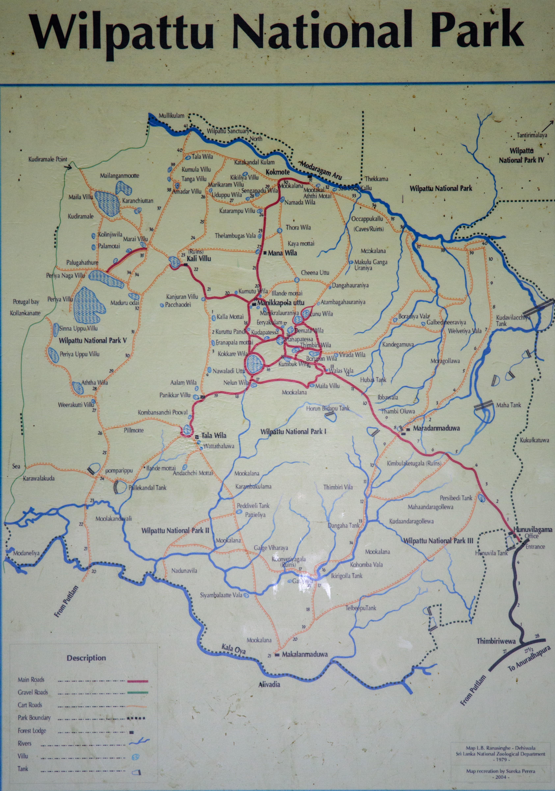

Wilpattu National Park is a national park in Sri Lanka. The unique feature of this park is the existence of "Willus" (Sinhala to English Translation: Natural Lakes) – natural, sand-rimmed water basins or depressions that fill with rainwater.
The Mahavansa records that in 543 BC Prince Vijaya landed at Tambapanni now known as Kudrimalai Point (Horse Point), established the Sinhalese kingdom in Tambapanni and founded the Sinhala nation. In 1905 the area was designated a sanctuary and in 1938 it was upgraded to the National Park status.
The annual Rainfall is about 1,000 mm (39 in) and the annual temperature is about 27.2 °C (81.0 °F). Inter-monsoonal rains in March and the northeast monsoon (December - February) are the main sources of rainfall.
The area of Yala National Park expands upto 978.807 km2 (377.919 sq mi) approximately. The sub-sections and constituents of the park can be seen in the image given below. 